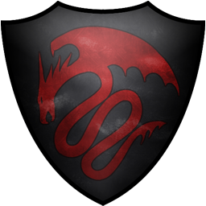
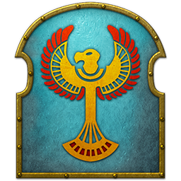
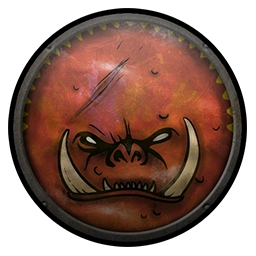
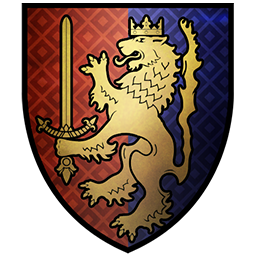
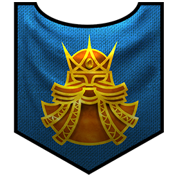
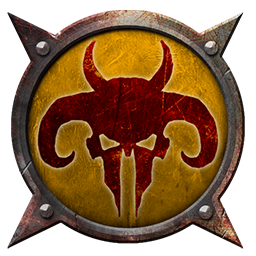
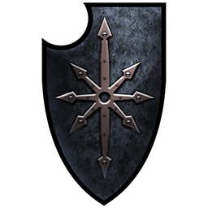

| Sylvania |
Vampires |
Mannfred von Carstein |
- Von Carstein
- The Barrow Legion
- Mousillon
- Templehof
- Vampire Counts Rebelds
- Waldenhof
- Necrach Brotherhood
- Strygos Empire
- The Silver Host
- Lahmian Sisterhood
- Nagashizzar
|
 |
| Khemri |
Undead |
Settra the Imperishable |
- Court of Lybaras
- Exiles of Nehek
- Followers of Nagash
- Dune Kingdoms
- Numas
- Rakph Dynasty
- The Sentinels
- Tomb Kings Rebels
|
 |
| Grimgor's 'Ardboyz |
Orks |
Grimgor Ironhide |
- Bonerattlaz
- Crooked Moon
- The Bloody Handz
- Broken Axe
- Black Venom
- Bloody Spearz
- Broken Nose
- Crooked Moon Mutinous Gits
- Necksnappers
- Orcs of the Bloddy Hand
- Red Eye
- Red Fangs
- Scabby Eye
- Skullsmasherz
- Teef Snatchaz
- Gloomy Woodz Tribe
- The Black Pit Tribe
- Arachnos
- Broken Chainz
- Leaf-Cutterz Tribe
- Skull Crag
- Creeping Death
- Red Cloud
- Dark Land Orcs
- Drippin Fangs
- Moon Howlerz
|
 |
| Reikland |
Humans |
Emperor Karl Franz |
- The Golden Order
- The Huntsmarshal's Expedition
- Averland
- Empire Secessionists
- Hochland
- Marienburg
- Middenland
- Nordland
- Ostland
- Ostermark
- Stirland
- Talabecland
- Wissenland
- Carroburg
- Cult of Ulric
- Middenheim
|
 |
| Bretonnia |
Humans |
King Louen Leoncoeur |
- Bordeleaux
- Carcassonne
- Chevaliers de Lyonesse
- Artois
- Bastonne
- Lyonesse
- Parravon
- Aquitaine
- Brionne
- Gisoreux
- Montfort
- Quenelles
- Knights of the Flame
- Knights of Origo
|
 |
| Karaz-a-Karak |
Dwarfs |
Thorgrim Grudgebearer |
- Karak Kadrin
- Clan Angrund
- Ironbrow's Expedition
- Barak varr
- Karak Azul
- Karak Hirn
- Karak Izor
- Karak Norn
- Karak Ziflin
- Kraka Drak
- Zhufbar
- Karak Zorn
- Clan Helhein
- Greybeard's Prospectors
- Spine of Sotek Dwarfs
- Karak Azorn
|
 |
| Warherd of the One-Eye |
Beastmen |
Khazrak the One-Eye |
- Harbinger of Disaster
- Warherd of the Shadowgave
- Slaughterhorn Tribe
- Jagged-Horn Tribe
- Redhorn Tribe
- Warherd of Chaos
- Ripper-Horn Tribe
- Shadowgor Warherd
- Skrinderkin Warherd
- Blooded-Axe Tribe
- Manblight Tribe
- Stone-Horn Tribe
|
 |
| Warriors of Chaos |
Barbarians |
Archaon the Everchosen |
- Kholek Suneater
- Sigvald the Magnificent
- Chaous Rebel Uprising
- Challenger of the Crow
- Challenger of the Eagle
- Challenger of the Hound
- Challenger of the Serpent
- Followers of Chaos
- Pupets of Chaos
- Servants to Chaos
- Vessels of Chaos
- Chaos Gathering
- Dreaded Wo
- Gharhar
- Khazag
- Kvellig
- Tong
|
 |